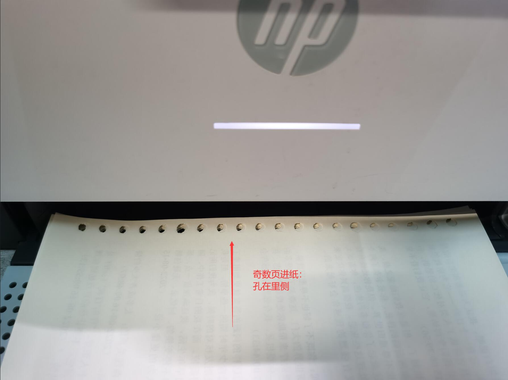
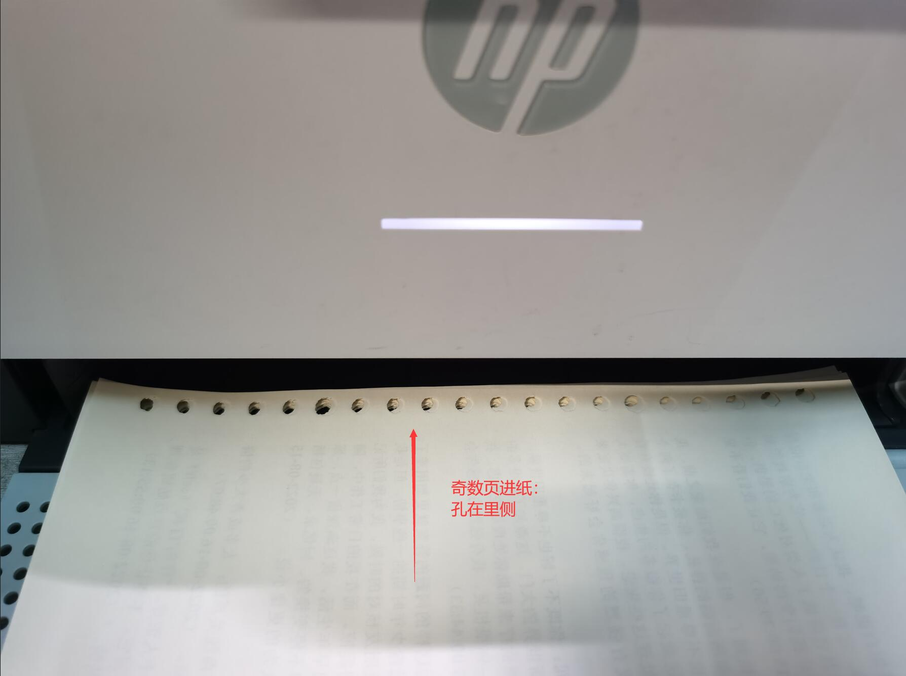

Figure 1: 双面打印的 A5 活页小本本
明早有个比较正式的宣讲，被叫去听咯，还要带上小本本和笔做记录，吓得我都不敢带 Kindle。后来想到可以把想看的一些内容1打印在小本本上，如图：
Figure 1: 双面打印的 A5 活页小本本
第一次用自己的打印机双面打 A5 的活页纸2，打印活页本需要考虑到孔和奇偶数页的位置关系，每一页都有对应该打印的位置。摸索了一下打印流程，记录在此。


Figure 2: 偶数页逆序打印设置及纸张放置
打印完偶数页之后是这样的：

Figure 3: 偶数页逆序打印效果
在文档中位置越靠后的页面，打印出来的纸张在越前面。
偶数页的内容在孔的左侧。
 

Figure 4: 奇数页正序打印设置及纸张放置
打印完奇数页之后是这样的：

Figure 5: 奇数页正序打印效果
奇数页的内容在孔的右侧。
打印后的顺序和文档顺序一致。
因为俺的打印机打印好的那一面是朝下的，所以要先逆序打印偶数页，再正序打印奇数页，这样最后打完的时候顺序才是对的，不需要手动去调整页面顺序。
俺之前还用过一台爱普生的喷墨打印机，具体型号记不得了，它打印完的页面是朝上的，所以双面打印是正序奇数页和正序偶数页就可以了。
写完了，吐槽一句，原装耗材真贵。